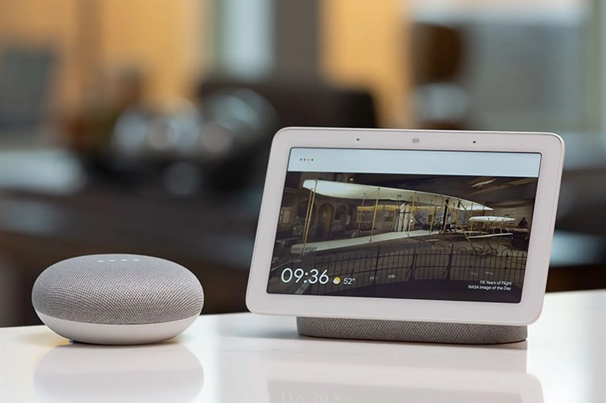

.png)
01
Power Your Savings with
Smart Energy Choices
Discover how Australian households can reduce electricity bills by up to 50% through intelligent appliance selection and energy-efficient practices.
$
$1,200
Average Annual Savings
%
30%
Energy Reduction Possible
CO2
2.5T
CO2 Saved Per Year

Where Your Energy Goes
Heating & Cooling40%
Water Heating25%
Refrigeration8%
Lighting7%
TVs & Entertainment10%
Other Appliances10%
Television Energy Guide
Smart choices in TV selection and usage can save Australian households $50-$200 annually while reducing environmental impact.
Energy Consumption by TV Type
6 Ways to Reduce Your TV Energy Costs
1
Enable Eco Mode
Reduces brightness while maintaining quality.
2
Optimize Brightness
Reduce to comfortable levels to save power.
3
Use Power Boards
Switch off to eliminate standby power.
4
Right-Size Your TV
Choose size based on viewing distance.
5
Update Firmware
Keep software current for best efficiency.
6
Check Star Rating
Look for 4+ star energy ratings.
Scenario
Australian households are facing rising electricity costs and are increasingly concerned about energy efficiency when purchasing home appliances.
Televisions are one of the most commonly used entertainment devices, especially large-screen models. However, many consumers are unsure how screen size, display technology, and brand choice influence long-term power consumption.
Target Audience
- Australian households planning to purchase a new television
- Consumers comparing large-screen TVs (75 inches and above)
- Non-technical users who prefer clear and visual explanations
- Environmentally conscious consumers
The following visualisations answer key questions consumers typically ask before purchasing a large-screen television.
Question 1: Does a larger screen size always use more electricity?
Screen size is usually the first factor customers consider when buying a TV. This chart shows that average power consumption generally increases as screen size becomes larger, indicating a positive relationship between size and electricity usage.
However, the increase is not consistent across all sizes. The noticeable variation within each size group suggests that screen size alone does not determine energy efficiency. Other factors such as display technology and brand optimisation also influence power consumption.
Insight:
While power consumption generally increases with screen size, a notable outlier appears in the 75-inch and above category. This may be caused by specific models using very high brightness settings, HDR modes, or less energy-efficient panel designs, resulting in significantly higher power usage than the average large-screen TV.
Question 2: Which display technology is more energy efficient for large TVs?
To minimise the confounding effect of screen size, this chart presents only televisions that are 75 inches and above. By restricting the comparison to large-screen models, differences in power consumption can be attributed more directly to display technology rather than size variation.
The results indicate that OLED televisions consume less average power than LCD-based televisions (including LED-backlit models) within the >=75-inch category. Although the difference is moderate, it demonstrates that OLED technology offers improved energy efficiency when comparing screens of the same size range.
This finding suggests that screen size acts as a confounding variable in overall power comparisons. When all sizes are included, average power consumption may appear higher for OLED due to its concentration in larger models. However, when controlling for size, OLED shows a relative efficiency advantage. Therefore, fair comparisons of energy performance should consider screen size alongside display technology.
Question 3: Does brand choice affect power consumption?
This chart illustrates the average power consumption of different brands for televisions that are 75 inches and above. By focusing exclusively on large-screen models, the comparison removes screen size as a confounding factor and allows for a more direct evaluation of brand-level performance.
The results reveal clear variation in average power usage across brands, even within the same screen size category. This indicates that manufacturer-specific design choices, such as panel technology, brightness calibration, backlight configuration, and energy management systems, play a meaningful role in determining overall electricity consumption.
Insight:
One brand demonstrates noticeably higher average power consumption compared to its competitors in the 75-inch and above segment, while several other brands achieve substantially lower average wattage. The difference between the highest and lowest brands suggests that energy efficiency is not solely determined by screen size, but also by engineering decisions and optimisation strategies. For consumers, this implies that selecting a more energy-efficient brand can reduce long-term operating costs and environmental impact, even when purchasing televisions of similar size.
Empowering Australians to Save Energy
Your trusted resource for making informed decisions about appliance energy consumption and reducing household electricity costs across Australia.
Our Mission
With energy costs rising across Australia and climate change concerns growing, we believe that empowering consumers with accessible, practical knowledge is the first step toward more sustainable energy use.
By understanding how appliances consume energy and learning about energy-efficient alternatives, Australian households can significantly reduce their electricity bills while contributing to a more sustainable future for our country.
Our goal is to make energy efficiency information simple, actionable, and relevant to everyday Australians making purchasing and usage decisions.

Why Focus on Appliances?
Household appliances represent a significant and often overlooked opportunity for energy savings in Australian homes
18-20
KWH PER DAY
Average electricity use in Australian homes
30%
FROM APPLIANCES
Portion of energy consumed by household appliances
24/7
ALWAYS ON
Many appliances operate continuously, even in standby
$500+
ANNUAL SAVINGS
Potential savings with efficient appliances and usage
Exercise Work
Access the individual exercise pages from this assignment in one place.
02
Exercise 4.3 - 4.6
Website with Bar Chart
Open the combined website work stored in the 4.3-4.6 folder.
Open Exercise 4.3 - 4.603
Exercise 6.1
Interactivity
Launch the interactive exercise page stored in the 6.1 folder.
Open Exercise 6.1